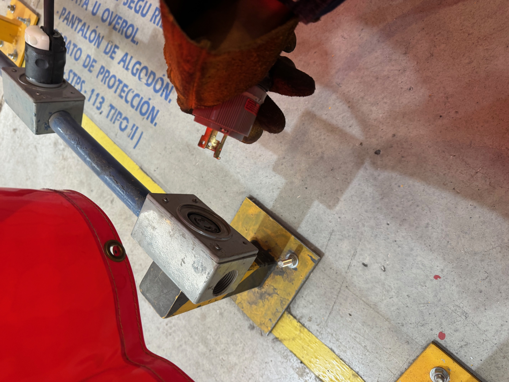
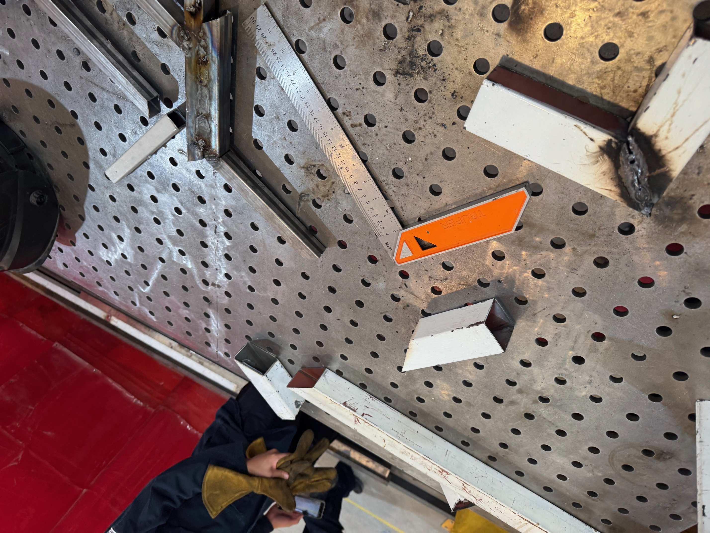
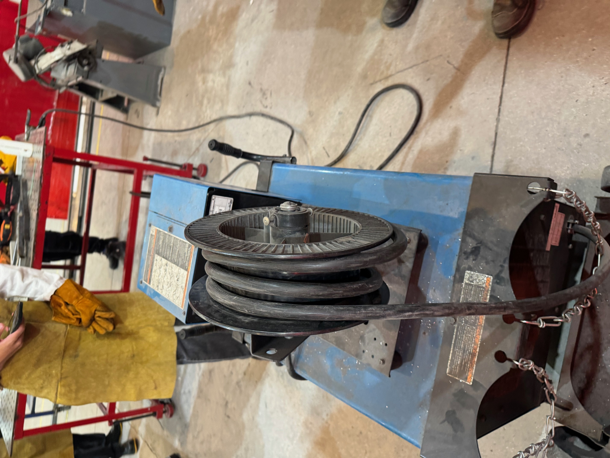

Reporte: Práctica de Soldadura y Corte de Perfiles Metálicos
Institución: Universidad Iberoamericana Puebla
Materia: Proyecto de Ingeniería I
1. Normas de Seguridad y Equipo de Protección Personal
Antes de ocupar las herramientas y empezar el taller, revisamos las medidas de seguridad para prevenir accidentes y proteger nuestra integridad física. El equipo obligatorio consiste en:
- Protección corporal: Overol o bata, pechera de cuero y guantes de alto grosor para resguardarse de chispas y piezas calientes.
- Protección para rostro y ojos: Lentes de seguridad transparentes y careta para soldar que es necesaria para bloquear la luz intensa y la radiación UV.
- Protección en extremidades: Calzado de seguridad con casquillo de acero o cerámica para evitar golpes por la caída accidental de herramientas.
- Seguridad general: Mantener el cabello completamente recogido para evitar enganches con el material de trabajo o contacto con chispas.
- Control de maquinaria: Los equipos de mayor riesgo están asegurados con candado. El estudiante debe solicitar al personal encargado la apertura del equipo antes de utilizarlo.
2. Configuración del equipo y técnica de soldado
Los profesores a cargo (Profesores Oliver y Cholula) explicaron la manera correcta de conectar la pinza de tierra (para la mesa de trabajo) y el portaelectrodo (lo que agarra la varilla para soldar).
- Instalación de cables: Se identificó la conexión correcta de la pinza de tierra (fijada a la mesa metálica de trabajo) y la colocación del portaelectrodo que sostiene la varilla de soldadura.
- Ajuste de parámetros eléctricos:
- Voltaje ALTO: El metal se funde demasiado rápido; entonces si no se utiliza la pinza con la velocidad adecuada, la pieza termina perforándose.
- Voltaje BAJO: La varilla tiende a quedarse pegada a la pieza base.
- Criterio de ajuste: Es necesario graduar la potencia de la máquina según el grosor del material y el tipo de trabajo a realizar.
- Técnica de trabajo:
- Es obligatorio confirmar que todas las medidas de protección se estén siguiendo antes de prender el arco eléctrico.
- El desplazamiento del electrodo debe mantenerse continuo y a una velocidad moderada (ni muy lento ni muy rápido).
- Un alejamiento excesivo del electrodo impide que el material se adhiera correctamente; un avance muy rápido genera un cordón débil o descontinuo; quedarse fijo en un mismo punto provoca un hoyo en la estructura.
3. Operación de Herramientas de Corte
Observamos los tipos de cortadoras disponibles en el taller y la metodología para realizar cortes limpios y seguros:
- Equipos disponibles:
- Cortadora con disco dentado.
- Cortadora con disco abrasivo (utiliza el desgaste por fricción para dividir la pieza).
- Procedimiento de corte:
- Asegurar firmemente la pieza metálica usando la prensa integrada en la base del equipo.
- Hacer el corte en un solo movimiento fluido y continuo. > > Si la acción se interrumpe o se realiza en varias pasadas, la estructura del metal se altera y el borde suele quedar mal.
- Conservar el equipo de protección puesto en todo momento debido a la proyección constante de chispas.
4. Acabado de Piezas
Al terminar los cortes, se quitaron los bordes irregulares y las rebabas sobrantes del metal:
- Esmeril de banco: Se utilizó para rebajar los sobrantes y nivelar las orillas de los perfiles cortados.
- Lijado manual: El profesor Cholula mostró cómo limpiar los bordes manualmente con lija para metal en caso de no disponer de un esmeril de banco.
5. Desarrollo de la Práctica
En la parte final del taller se aplicaron los conocimientos explicados:
- Se sujetaron y cortaron tramos de perfiles metálicos siguiendo las instrucciones dads durante la práctica.
- Después se pulieron y desbarbaron los extremos con esmeril y lija manual.
- Por último se llevaron los perfiles preparados a la mesa de trabajo para realizar pruebas de unión mediante soldadura por arco eléctrico.
6. Registro Fotográfico y Anexos



7. Conclusión
En esta práctica se comprendió la importancia de aplicar estrictamente el protocolo de seguridad antes de manipular herramientas de alto riesgo. Asimismo, se adquirió experiencia práctica en la calibración y técnica de soldadura por arco, el manejo correcto de cortadoras para obtener cortes limpios y el acabado final de piezas metálicas mediante esmerilado y lijado manual.